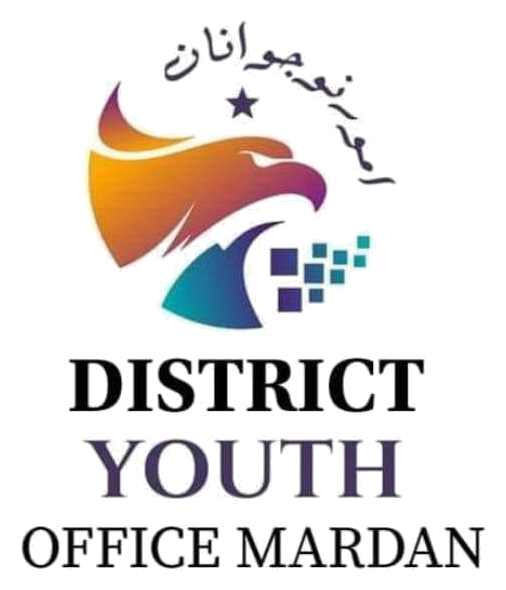

Youth Development Programs
District Youth Office Mardan is working on youth development, skills, talent promotion and community engagement initiatives.
Read MoreDistrict Youth Office Mardan is committed to the Social, Economic, and Civic Empowerment of youth across Mardan — discovering, nurturing, and elevating local talent.

Directorate of Youth Affairs, Khyber Pakhtunkhwa
Empowering the vibrant youth of District Mardan for a brighter, self-reliant future.
The District Youth Office Mardan serves under the Directorate of Youth Affairs, Government of Khyber Pakhtunkhwa. We unlock the potential of youth through targeted vocational skill programs, civic leadership training, digital inclusion, and healthy recreational activities.
Our core mission is Identifying and Promoting Local Youth Talent in innovation, sports, IT, arts, and leadership across all tehsils of District Mardan.
Falcon / Shaheen: Ambition, high vision, courage, and relentless drive of KP youth.
Digital Blocks: Technology adoption, modern IT skills, freelancing, and innovation.
Urdu Script & Star: Cultural identity, national pride, and guiding hope for the district.
Providing platforms in sports, debate, science, and tech competitions for urban & rural youth.
Tailored development paths designed for Mardan's dynamic youth demographic.
Building strong civic engagement, community leadership, and social welfare programs across all tehsils of Mardan.
Providing career development programs, entrepreneurship workshops, e-commerce, and digital skill bootcamps.
Fostering active youth involvement in governance, youth assemblies, dialogue forums, and leadership mentorship.
Showcasing local talents in IT, sports, culture, and arts through structured district-level competitions and grants.
Latest activities, programs, events and announcements from District Youth Office Mardan.
District Youth Office Mardan is working on youth development, skills, talent promotion and community engagement initiatives.
Read MoreInformation about upcoming training sessions, workshops, bootcamps and youth-focused activities will be published here.
Read MoreOpportunities for talented youth in sports, IT, arts, culture, innovation and leadership.
Read MoreReach out to the District Youth Office Mardan for inquiries, registrations & collaborations.
Jawan Markaz Sports Complex Mardan, Khyber Pakhtunkhwa 23200, Mardan, Pakistan
Monday – Friday: 9:00 AM – 5:00 PM